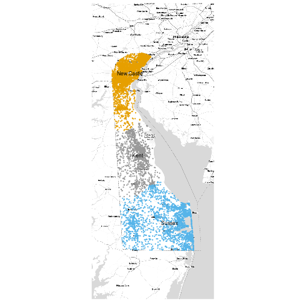

There is/are 3 level(s) of nested ecosystems in Delaware: Public Use Micro Areas (PUMAs) and U.S. tracts. Counties may be recovered from tracts by unioning them with the help of a PUMA-County relationship table here.
There is/are 214 lowest level subregions: U.S. tracts.
 The above map shows a sub-sample of the different sub regions. Each region has a sample of up to 10,000 households.
Total Synthetic Households: 398,866
There are 15 columns in the synthetic household ecosystem. They are:
## [1] "RT" "TYPE" "SERIALNO" "puma" "id"
## [6] "REGION" "ST" "HINCP" "NP" "SYNTHETIC"
## [11] "HID" "place" "id" "longitude" "latitude"Total Synthetic Persons: 966,786
There are 37 columns in the synthetic people ecosystem. They are:
## [1] "RT" "TYPE" "SERIALNO" "puma" "id"
## [6] "REGION" "ST" "HINCP" "NP" "SYNTHETIC"
## [11] "HID" "place" "id" "longitude" "latitude"
## [16] "RT" "puma" "id" "ST" "SEX"
## [21] "AGEP" "SCH" "SCHG" "RELP" "HISP"
## [26] "ESR" "PINCP" "NATIVITY" "OCCP" "POBP"
## [31] "RAC1P" "SYNTHETIC" "PID" "school" "id"
## [36] "workplace" "id"| Type | Source | Year | Link | Documentation | Proprietary |
|---|---|---|---|---|---|
| Counts | ACS SF 5-Year | 2010 | link | doc | No |
| Shapefile | US TIGER Roads | 2010 | link | doc | No |
| Microdata | ACS PUMS 1-Year | 2013 | link | doc | No |
| Schools | NCES | 2013, 2011 | link | doc | No |
| Workplaces | Esri Workplaces | 2009 | link | doc | Yes |
| Type | Method | Documentation |
|---|---|---|
| Population Characteristics | IPF | doc |
| Agent Locations | Road-based | doc |
Population Characteristics: IPF. Iterative Proportional Fitting (IPF) is an algorithm to fill in a contingency table given some set of marginal totals and a seed table. The marginal totals are approximately maintained at the end of this process. In the U.S. SPEW-generated regions, the marginals used are number of persons per household (NP), household income (HINCP), head of household race (RAC1P), and head of household age (AGEP). The seed table is calculated from the contingency table generated by the tract's microdata on those 4 variables.
Once the contingency table is filled, we must sample records from the microdata to form a synthetic household population. For each cell in the contingency table, weights are assigned to each record in the microdata based on the distance of the record in the microdata to the actual cell characteristic values. We sample the value of the cell number of records from the microdata based on the the calculated weights. We repeat this for each cell in the contingency table.
To form a synthetic person population, we assign people to the synthetic household population based on the serial number of the household. For more details see the SPEW documentation.
Agent Locations: Road-based. The idea that motivates this method is that households are typically located near roads. We asisgn each synthetic household a unique location within its assigned tract, in terms of latitude and longitude coordinates. We do this by first intersecting the tract boundary shapefile with the TIGER roads shapefile (with interstate roads removed) which yields all the roads within the tract to which the household belongs. We then sample a point uniformly from the intersected-roads and add a small amount of noise so the households are not actually on the roads.
This report was generated on 2017-01-24 15:45:08 by spew, an R package used to generate populations throughout the world. Please see our spew Github repo and our previously generated regions at epimodels.org. We are a part of the Informatics Services Group MIDAS branch at Carnegie Mellon University and University of Pittsburgh and are supported by 1 U24 GM110707-01 NIH/NIGMS grant. Please send your comments and suggestions to sventura@stat.cmu.edu.